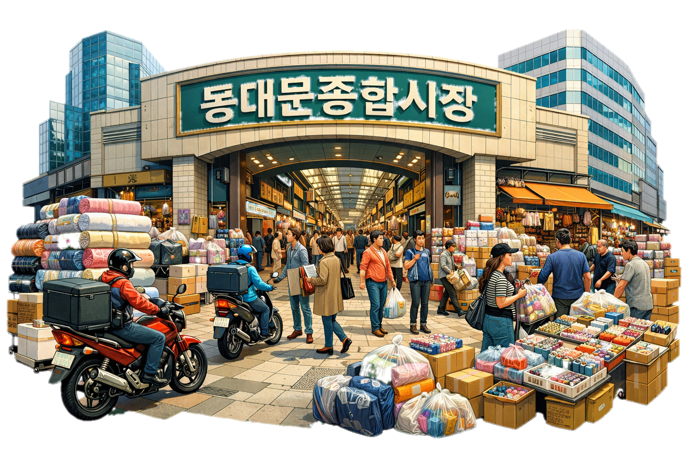

동대문 종합시장 정복 가이드:
K-패션의 심장에서 보물찾기
디자이너들의 영감과 대중들의 취향이 만나는 거대 패션 클러스터

동대문 디자인 플라자(DDP)의 유려한 곡선 건너편에는 한국 패션 산업의 엔진이라 불리는 동대문 종합시장이 자리하고 있습니다. 1970년 동양 최대 규모의 단일 시장으로 문을 연 이곳은 현재 원단, 의류 부자재, 액세서리, 혼수용품 등을 취급하는 수천 개의 점포가 밀집해 있는 패션의 성지입니다.
1. DIY 애호가들의 천국: 액세서리 부자재 상가
동대문 종합시장 5층은 최근 젊은 층과 외국인 관광객들에게 가장 인기 있는 층입니다. 수천 종류의 비즈, 단추, 키링 부자재, 리본 등이 가득하여 나만의 개성 있는 액세서리를 직접 만들려는 사람들로 북적입니다.
- 쇼핑 팁: 상가가 매우 복잡하므로 점포 번호를 미리 메모해 두는 것이 좋습니다. 마음에 드는 부품을 낱개로도 구매할 수 있어 큰 부담 없이 나만의 굿즈를 만들 수 있습니다.
2. 원단과 디자인의 시작점
종합시장의 핵심은 단연 원단 시장입니다. 의류 제작에 필요한 모든 종류의 원단이 이곳에서 거래되며, 한국의 패션 디자이너들이 영감을 얻기 위해 매일같이 드나드는 곳입니다. 일반 소비자들도 커튼이나 침구류 제작을 위해 맞춤 상담을 받을 수 있는 점포들이 많아 인테리어에 관심 있는 분들에게도 추천하는 장소입니다.
3. 금강산도 식후경: 동대문 먹거리 투어
쇼핑으로 지친 몸을 달래줄 동대문만의 특색 있는 먹거리 골목을 소개합니다.
- 닭한마리 골목: 맑은 육수에 닭 한 마리를 통째로 넣고 끓여 먹는 '닭한마리'는 동대문의 상징적인 음식입니다. 쫄깃한 떡사리와 칼국수까지 곁들이면 최고의 보양식이 됩니다.
- 생선구이 골목: 연탄불에 직접 구워낸 고소한 생선구이 향기가 골목 가득 퍼집니다. 저렴한 가격에 든든한 집밥 같은 한 끼를 즐길 수 있습니다.
4. 동대문 여행 팁
- 위치: 지하철 1, 4호선 동대문역 8번 출구와 바로 연결되어 접근성이 매우 좋습니다.
- 운영 시간: 원단 및 부자재 시장은 오후 6시면 문을 닫지만, 주변 의류 도매 시장은 밤부터 새벽까지 활발하게 운영됩니다.
- 연계 코스: 낮에는 종합시장에서 부자재 쇼핑을, 밤에는 DDP의 야경과 동대문 야시장을 즐기는 코스를 추천합니다.
동대문 종합시장은 화려한 런웨이 뒤에서 묵묵히 돌아가는 열정적인 현장입니다. 원단 한 롤, 단추 하나에서 시작되는 패션의 에너지를 느끼며, 여러분만의 취향이 담긴 보물을 찾아보세요. 서울에서만 경험할 수 있는 역동적인 쇼핑 여행이 될 것입니다.